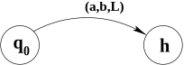
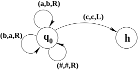
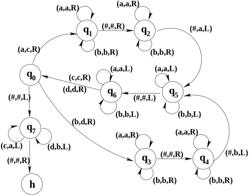
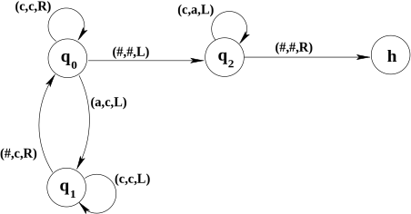

Ken Levasseur, Al Doerr, Michiel Smid, Oscar Levin, Charles M. Grinstead, J. Laurie Snell, Eric Lehman, F. Thomson Leighton, Albert R Meyer, Jeff Erickson, Kenneth P. Bogart, Carol Chritchlow, David Eck, OpenDSA Project, L.J. Miller
In Section 17.4, we saw that there is a neat correspondence between regular expressions and finite automata. That is, a language is generated by a regular expression if and only if that language is accepted by a finite automaton.
In Section 17.5, we introduced the class of context-free languages, and we have considered how context-free grammars can be used to generate context-free languages. You might wonder whether there is any type of automaton that can be used to recognize context-free languages. In fact, there is: The abstract machines known as pushdown automata that utilize a stack in addition to a finite automaton, can be used to define context-free languages. These and languages that are not context-free (or context-sensitive languages) will not be covered in this text. If you wish to learn more about pushdown automata, non-context-free languages, or general grammars please refer to the original source text for this chapter: Foundations of Computation 1
math.hws.edu/FoundationsOfComputation/
, Chapter 4
We saw hints in the previous sections that ``computation’’ is a more general concept than we might have thought. In this chapter, we will see that computer programs are equivalent, in terms of their computational power, to a particularly simple model of computation known as a Turing machine. We shall also see that there are limits to what can be done by computing.
Subsection17.6.1Turing Machines
Historically, the theoretical study of computing began before computers existed. One of the early models of computation was developed in the 1930s by the British mathematician, Alan Turing, who was interested in studying the theoretical abilities and limitations of computation. His model for computation is a very simple abstract computing machine which has come to be known as a Turing machine. While Turing machines are not applicable in the same way that regular expressions, finite-state automata, and grammars are applicable, their use as a fundamental model for computation means that every computer scientist should be familiar with them, at least in a general way.
A Turing machine is really not much more complicated than a finite-state automaton or a pushdown automaton. Like a FSA, a Turing machine has a finite number of possible states, and it changes from state to state as it computes. However, a Turing machine also has an infinitely long tape that it can use for input and output. The tape extends to infinity in both directions. The tape is divided into cells, which are in one-to-one correspondence with the integers, \(\Z\text{.}\) Each cell can either be blank or it can hold a symbol from a specified alphabet. The Turing machine can move back and forth along this tape, reading and writing symbols and changing state. It can read only one cell at a time, and possibly write a new value in that cell. After doing this, it can change state and it can move by one cell either to the left or to the right. This is how the Turing machine computes. To use a Turing machine, you would write some input on its tape, start the machine, and let it compute until it halts. Whatever is written on the tape at that time is the output of the computation.
You might want to visualize a Turing machine as a physical machine such as in this simple diagram:
, Public domain, via Wikimedia Commons However, these kinds of diagrams do not tell us anything about the functioning of a particular machine.
Although the tape is infinite, only a finite number of cells can be non-blank at any given time. If you don’t like the idea of an infinite tape, you can think of a finite tape that can be extended to an arbitrarily large size as the Turing machine computes: If the Turing machine gets to either end of the tape, it will pause and wait politely until you add a new section of tape. In other words, it’s not important that the Turing machine have an infinite amount of memory, only that it can use as much memory as it needs for a given computation, up to any arbitrarily large size. In this way, a Turing machine is like a computer that can ask you to buy it a new disk drive whenever it needs more storage space to continue a computation.
A given Turing machine has a fixed, finite set of states. One of these states is designated as the start state. This is the state in which the Turing machine begins a computation. Another special state is the halt state. The Turing machine’s computation ends when it enters its halt state. It is possible that a computation might never end because the machine never enters the halt state. This is analogous to an infinite loop in a computer program.
At each step in its computation, the Turing machine reads the contents of the tape cell where it is located. Depending on its state and the symbol that it reads, the machine writes a symbol (possibly the same symbol) to the cell, moves one cell either to the left or to the right, and (possibly) changes its state. The output symbol, direction of motion, and new state are determined by the current state and the input symbol. Note that either the input symbol, the output symbol, or both, can be blank. A Turing machine has a fixed set of rules that tell it how to compute. Each rule specifies the output symbol, direction of motion, and new state for some combination of current state and input symbol. The machine has a rule for every possible combination of current state and input symbol, except that there are no rules for what happens if the current state is the halt state. Of course, once the machine enters the halt state, its computation is complete and the machine simply stops.
I will use the character # to represent a blank in a way that makes it visible. I will always use \(h\) to represent the halt state. I will indicate the directions, left and right, with \(L\) and \(R\text{,}\) so that \(\{L,R\}\) is the set of possible directions of motion. With these conventions, we can give the formal definition of a Turing machine as follows:
Definition17.6.2.Turing Machine.
A Turing machine is a 4-tuple \((Q,\Lambda,q_0,\delta)\text{,}\) where:
\(Q\) is a finite set of states, including the halt state, \(h\text{.}\)
\(\Lambda\) is an alphabet which includes the blank symbol, #.
\(q_0\in Q\) is the start state.
\(\delta\colon (Q - \{h\})\times\Lambda \to \Lambda\times
\{L,R\}\times Q\) is the transition function. The fact that \(\delta(q,\sigma)=(\tau,d,r)\) means that when the Turing machine is in state \(q\) and reads the symbol \(\sigma\text{,}\) it writes the symbol \(\tau\text{,}\) moves one cell in the direction \(d\text{,}\) and enters state \(r\text{.}\)
Even though this is the formal definition, it’s easier to work with a transition diagram representation of Turing machines. The transition diagram for a Turing machine is similar to the transition diagram for a DFA. However, there are no ``accepting’’ states (only a halt state). Furthermore, there must be a way to specify the output symbol and the direction of motion for each step of the computation. We do this by labeling arrows with notations of the form \((\sigma,\tau,L)\) and \((\sigma,\tau,R)\text{,}\) where \(\sigma\) and \(\tau\) are symbols in the Turing machine’s alphabet. For example,

indicates that when the machine is in state \(q_0\) and reads an \(a\text{,}\) it writes a \(b\text{,}\) moves left, and enters state \(h\text{.}\)
Here, for example, is a transition diagram for a simple Turing machine that moves to the right, changing \(a\)’s to \(b\)’s and vice versa, until it finds a \(c\text{.}\) It leaves blanks (#’s) unchanged. When and if the machine encounters a \(c\text{,}\) it moves to the left and halts:

Transition diagram for a simple Turing machine that moves to the right, changing \(a\)’s to \(b\)’s and vice versa, until it finds a \(c\text{.}\)
To simplify the diagrams, I will leave out any transitions that are not relevant to the computation that I want the machine to perform. You can assume that the action for any omitted transition is to write the same symbol that was read, move right, and halt.
For example, shown below is a transition diagram for a Turing machine that makes a copy of a string of \(a\)’s and \(b\)’s. To use this machine, you would write a string of \(a\)’s and \(b\)’s on its tape, place the machine on the first character of the string, and start the machine in its start state, \(q_0\text{.}\) When the machine halts, there will be two copies of the string on the tape, separated by a blank. The machine will be positioned on the first character of the leftmost copy of the string. Note that this machine uses \(c\)’s and \(d\)’s in addition to \(a\)’s and \(b\)’s. While it is copying the input string, it temporarily changes the \(a\)’s and \(b\)’s that it has copied to \(c\)’s and \(d\)’s, respectively. In this way it can keep track of which characters it has already copied. After the string has been copied, the machine changes the \(c\)’s and \(d\)’s back to \(a\)’s and \(b\)’s before halting.

In this machine, state \(q_0\) checks whether the next character is an \(a\text{,}\) a \(b\text{,}\) or a # (indicating the end of the string). States \(q_1\) and \(q_2\) add an \(a\) to the end of the new string, and states \(q_3\) and \(q_4\) do the same thing with a \(b\text{.}\) States \(q_5\) and \(q_6\) return the machine to the next character in the input string. When the end of the input string is reached, state \(q_7\) will move the machine back to the start of the input string, changing \(c\)’s and \(d\)’s back to \(a\)’s and \(b\)’s as it goes. Finally, when the machine hits the # that precedes the input string, it moves to the right and halts. This leave it back at the first character of the input string. It would be a good idea to work through the execution of this machine for a few sample input strings. You should also check that it works even for an input string of length zero.
Our primary interest in Turing machines is as language processors. Suppose that \(w\) is a string over an alphabet \(\Sigma\text{.}\) We will assume that \(\Sigma\) does not contain the blank symbol. We can use \(w\) as input to a Turing machine \(M=(Q,\Lambda,q_0,\delta)\) provided that \(\Sigma\SUB\Lambda\text{.}\) To use \(w\) as input for \(M\text{,}\) we will write \(w\) on \(M\)’s tape and assume that the remainder of the tape is blank. We place the machine on the cell containing the first character of the string, except that if \(w=\EMPTYSTRING\) then we simply place the machine on a completely blank tape. Then we start the machine in its initial state, \(q_0\text{,}\) and see what computation it performs. We refer to this setup as ``running \(M\) with input \(w\text{.}\)’’
When \(M\) is run with input \(w\text{,}\) it is possible that it will just keep running forever without halting. In that case, it doesn’t make sense to ask about the output of the computation. Suppose however that \(M\) does halt on input \(w\text{.}\) Suppose, furthermore, that when \(M\) halts, its tape is blank except for a string \(x\) of non-blank symbols, and that the machine is located on the first character of \(x\text{.}\) In this case, we will say that ``\(M\) halts with output \(x\text{.}\)’’ In addition, if \(M\) halts with an entirely blank tape, we say that ``\(M\) halts with output \(\varepsilon\text{.}\)’’ Note that when we run \(M\) with input \(w\text{,}\) one of three things can happen: (1) \(M\) might halt with some string as output; (1) \(M\) might fail to halt; or (3) \(M\) might halt in some configuration that doesn’t count as outputting any string.
The fact that a Turing machine can produce an output value allows us for the first time to deal with computation of functions. A function \(f\colon A\to B\) takes an input value in the set \(A\) and produces an output value in the set \(B\text{.}\) If the sets are sets of strings, we can now ask whether the values of the function can be computed by a Turing machine. That is, is there a Turing machine \(M\) such that, given any string \(w\) in the domain of \(f\) as input, \(M\) will compute as its output the string \(f(w)\text{.}\) If this is that case, then we say that \(f\) is a Turing-computable function.
Definition17.6.3.Turing-computable.
Suppose that \(\Sigma\) and \(\Gamma\) are alphabets that do not contain # and that \(f\) is a function from \(\Sigma^*\) to \(\Gamma^*\text{.}\) We say that \(f\) is Turing-computable if there is a Turing machine \(M=(Q,\Lambda,q_0,\delta)\) such that \(\Sigma\SUB\Lambda\) and \(\Gamma\SUB\Lambda\) and for each string \(w\in\Sigma^*\text{,}\) when \(M\) is run with input \(w\text{,}\) it halts with output \(f(w)\text{.}\) In this case, we say that \(M\) computes the function \(f\text{.}\)
For example, let \(\Sigma=\{a\}\) and define \(f\colon\Sigma^*\to\Sigma^*\) by \(f(a^n)=a^{2n}\text{,}\) for \(n\in\N\text{.}\) Then \(f\) is Turing-computable since it is computed by this Turing machine:

Transition diagram for Turing machine \(f\) described above.
We can also use Turing machines to define ``computable languages.’’ There are actually two different notions of Turing-computability for languages. One is based on the idea of Turing-computability for functions. Suppose that \(\Sigma\) is an alphabet and that \(L\SUB\Sigma^*\text{.}\) The characteristic function of \(L\) is the function \(\chi_L\colon\Sigma^*\to\{0,1\}\) defined by the fact that \(\chi_L(w)=1\) if \(w\in L\) and \(\chi_L(w)=0\) if \(w\not\in L\text{.}\) Note that given the function \(\chi_L\text{,}\)\(L\) can be obtained as the set \(L=\{w\in\Sigma^*\st \chi_L(w)=1\}\text{.}\) Given a language \(L\text{,}\) we can ask whether the corresponding function \(\chi_L\) is Turing-computable. If so, then we can use a Turing machine to decide whether or not a given string \(w\) is in \(L\text{.}\) Just run the machine with input \(w\text{.}\) It will halt with output \(\chi_L(w)\text{.}\) (That is, it will halt and when it does so, the tape will be blank except for a 0 or a 1, and the machine will be positioned on the 0 or 1.) If the machine halts with output 1, then \(w\in L\text{.}\) If the machine halts with output 0, then \(w\not\in L\text{.}\)
Definition17.6.4.Turing-decidable.
Let \(\Sigma\) be an alphabet that does not contain # and let \(L\) be a language over \(\Sigma\text{.}\) We say that \(L\) is Turing-decidable if there is a Turing machine \(M=(Q,\Lambda,q_0,\delta)\) such that \(\Sigma\SUB\Lambda\text{,}\)\(\{0,1\}\SUB\Lambda\text{,}\) and for each \(w\in\Sigma^*\text{,}\) when \(M\) is run with input \(w\text{,}\) it halts with output \(\chi_L(w)\text{.}\) (That is, it halts with output 0 or 1, and the output is 0 if \(w\not\in L\) and is 1 if \(w\in L\text{.}\)) In this case, we say that \(M\) decides the language \(L\text{.}\)
The second notion of computability for languages is based on the interesting fact that it is possible for a Turing machine to run forever, without ever halting. Whenever we run a Turing machine \(M\) with input \(w\text{,}\) we can ask the question, will \(M\) ever halt or will it run forever? If \(M\) halts on input \(w\text{,}\) we will say that \(M\) ``accepts’’ \(w\text{.}\) We can then look at all the strings over a given alphabet that are accepted by a given Turing machine. This leads to the notion of Turing-acceptable languages.
Definition17.6.5.Turing-acceptable.
Let \(\Sigma\) be an alphabet that does not contain #, and let \(L\) be a language over \(\Sigma\text{.}\) We say that \(L\) is Turing-acceptable if there is a Turing machine \(M=(Q,\Lambda,q_0,\delta)\) such that \(\Sigma\SUB\Lambda\text{,}\) and for each \(w\in\Sigma^*\text{,}\)\(M\) halts on input \(w\) if and only if \(w\in L\text{.}\) In this case, we say that \(M\) accepts the language \(L\text{.}\)
It should be clear that any Turing-decidable language is Turing-acceptable. In fact, if \(L\) is a language over an alphabet \(\Sigma\text{,}\) and if \(M\) is a Turing machine that decides \(L\text{,}\) then it is easy to modify \(M\) to produce a Turing machine that accepts \(L\text{.}\) At the point where \(M\) enters the halt state with output 0, the new machine should enter a new state in which it simply moves to the right forever, without ever halting. Given an input \(w\in\Sigma^*\text{,}\) the modified machine will halt if and only if \(M\) halts with output 1, that is, if and only if \(w\in L\text{.}\)
Subsection17.6.2Computability
At this point, it would be useful to look at increasingly complex Turing machines, such as those with more tapes, which compute increasingly complex functions and languages. Although Turing machines are very simple devices, it turns out that they can perform very sophisticated computations. In fact, any computation that can be carried out by a modern digital computer---even one with an unlimited amount of memory---can be carried out by a Turing machine. Although it is not something that can be proved, it is widely believed that anything that can reasonably be called ``computation’’ can be done by a Turing machine. This claim is known as the Church-Turing Thesis.
We do not have time to look at enough examples to convince you that Turing machines are as powerful as computers, but the proof reduces to the fact that computers are actually fairly simple in their basic operation. Everything that a computer does comes down to copying data from one place to another, making simple comparisons between two pieces of data, and performing some basic arithmetic operations. It’s possible for Turing machines to do all these things. In fact, it’s possible to build a Turing machine to simulate the step-by-step operation of a given computer. Doing so proves that the Turing machine can do any computation that the computer could do, although it will, of course, work much, much more slowly.
We have used Turing machines to define Turing-acceptable languages and Turing-decidable languages. The definitions seem to depend very much on the peculiarities of Turing machines. But the same classes of languages can be defined in other ways. For example, we could use programs running on an idealized computer, with an unlimited amount of memory, to accept or decide languages. Or we could use \(n\)-tape Turing machines. The resulting classes of languages would be exactly the same as the Turing-acceptable and Turing-decidable languages.
We could look at other ways of specifying languages ``computationally.’’ One of the most natural is to imagine a Turing machine or computer program that runs forever and outputs an infinite list of strings over some alphabet \(\Sigma\text{.}\) In the case of Turing machines, it’s convenient to think of a two-tape Turing machine that lists the strings on its second tape. The strings in the list form a language over \(\Sigma\text{.}\) A language that can be listed in this way is said to be recursively enumerable. Note that we make no assumption that the strings must be listed in any particular order, and we allow the same string to appear in the output any number of times. Clearly, a recursively enumerable language is ``computable’’ in some sense. Perhaps we have found a new type of computable language. But no---it turns out that we have just found another way of describing the Turing-acceptable languages. The following theorem makes this fact official and adds one more way of describing the same class of languages:
Theorem17.6.6.
Let \(\Sigma\) be an alphabet and let \(L\) be a language over \(\Sigma\text{.}\) Then the following are equivalent:
There is a Turing machine that accepts \(L\text{.}\)
There is a two-tape Turing machine that runs forever, making a list of strings on its second tape, such that a string \(w\) is in the list if and only if \(w\in L\text{.}\)
There is a Turing-computable function \(f\colon\{a\}^*\to\Sigma^*\) such that \(L\) is the range of the function \(f\text{.}\)
Next, we compare Turing machines to a completely different method of specifying languages: grammars. Suppose \(G=(V,\Sigma,P,S)\) is a general grammar and that \(L\) is the language generated by \(G\text{.}\) Then there is a Turing machine, \(M\text{,}\) that accepts the same language, \(L\text{.}\) The alphabet for \(M\) will be \(V\cup\Sigma\cup\{\text{\$,#}\}\text{,}\) where $ is a symbol that is not in \(V\cup\Sigma\text{.}\) (We also assume that # is not in \(V\cup\Sigma\text{.}\)) Suppose that \(M\) is started with input \(w\text{,}\) where \(w\in\Sigma^*\text{.}\) We have to design \(M\) so that it will halt if and only if \(w\in L\text{.}\) The idea is to have \(M\) find each string that can be derived from the start symbol \(S\text{.}\) The strings will be written to \(M\)’s tape and separated by $’s. \(M\) can begin by writing the start symbol, \(S\text{,}\) on its tape, separated from \(w\) by a $. Then it repeats the following process indefinitely: For each string on the tape and for each production rule, \(x\PRODUCES y\text{,}\) of \(G\text{,}\) search the string for occurrences of \(x\text{.}\) When one is found, add a $ to the end of the tape and copy the string to the end of the tape, replacing the occurrence of \(x\) by \(y\text{.}\) The new string represents the results of applying the production rule \(x\PRODUCES y\) to the string. Each time \(M\) produces a new string, it compares that string to \(w\text{.}\) If they are equal, then \(M\) halts. If \(w\) is in fact in \(L\text{,}\) then eventually \(M\) will produce the string \(w\) and will halt. Conversely, if \(w\) is not in \(L\text{,}\) then \(M\) will go on producing strings forever without ever finding \(w\text{,}\) so \(M\) will never halt. This shows that, in fact, the language \(L\) is accepted by \(M\text{.}\)
Conversely, suppose that \(L\) is a language over an alphabet \(\Sigma\text{,}\) and that \(L\) is Turing-acceptable. Then it is possible to find a grammar \(G\) that generates \(L\text{.}\) To do this, it’s convenient to use the fact that, as discussed above, there is a Turing-computable function \(f\colon \{a\}^*\to\Sigma\) such that \(L\) is the range of \(f\text{.}\) Let \(M=(Q,\Lambda,q_0,\delta)\) be a Turing machine that computes the function \(f\text{.}\) We can build a grammar, \(G\text{,}\) that imitates the computations performed by \(M\text{.}\) The idea is that most of the production rules of \(G\) will imitate steps in the computation of \(M\text{.}\) Some additional rules (which we won’t get into here) must be added to get things started, to clean up, and to otherwise bridge the conceptual gap between grammars and Turing machines.
We have now shown, very informally, that a language \(L\) is Turing-acceptable if and only if there is a grammar \(G\) that generates \(L\text{.}\) Even though Turing machines and grammars are very different things, they are equivalent in terms of their ability to describe languages. We state this as a theorem:
Theorem17.6.7.
A language \(L\) is Turing acceptable (equivalently, recursively enumerable) if and only if there is a general grammar that generates \(L\text{.}\)
In this section, we have been talking mostly about recursively enumerable languages (also known as the Turing-acceptable languages). What about the Turing-decidable languages? We already know that if a language \(L\) is Turing-decidable, then it is Turing-acceptable. The converse is not true (although we won’t be able to prove this yet). However, suppose that \(L\) is a language over the alphabet \(\Sigma\) and that both \(L\) and its complement, \(\bar{L}=\Sigma^* - L\text{,}\) are Turing-acceptable. Then \(L\) is Turing-decidable.
For suppose that \(M\) is a Turing machine that accepts the language \(L\) and that \(M'\) is a Turing machine that accepts \(\bar{L}\text{.}\) We must show that \(L\) is Turing-decidable. That is, we have to build a Turing machine \(T\) that decides \(L\text{.}\) For each \(w\in\Sigma^*\text{,}\) when \(T\) is run with input \(w\text{,}\) it should halt with output 1 if \(w\in L\) and with output \(0\) if \(w\not\in L\text{.}\) To do this, \(T\) will simulate the computation of both \(M\) and \(M'\) on input \(w\text{.}\) (It will simulate one step in the computation of \(M\text{,}\) then one step in the computation of \(M'\text{,}\) then one step of \(M\text{,}\) then one step of \(M'\text{,}\) and so on.) If and when the simulated computation of \(M\) halts, then \(T\) will halt with output 1; since \(M\) accepts \(L\text{,}\) this will happen if and only if \(w\in L\text{.}\) If and when the simulated computation of \(M'\) halts, then \(T\) will halt with output 0; since \(M\) accepts \(L\text{,}\) this will happen if and only if \(w\not\in L\text{.}\) So, for any \(w\in\Sigma^*\text{,}\)\(T\) halts with the desired output. This means that \(T\) does in fact decide the language \(L\text{.}\)
It is easy to prove the converse, and the proof is left as an exercise. So we see that a language is Turing-decidable if and only if both it and its complement are Turing-acceptable. Since Turing-acceptability can be defined using other forms of computation besides Turing machines, so can Turing-decidability. For example, a language is Turing-decidable if and only if both it and its complement can be generated by general grammars. We introduced the term ``recursively enumerable’’ as a synonym for Turing-acceptable, to get away from the association with a particular form of computation. Similarly, we define the term ``recursive’’ as a synonym for Turing-decidable. That is, a language \(L\) is said to be recursive if and only if it is Turing-decidable. We then have the theorem:
Theorem17.6.8.
Let \(\Sigma\) be an alphabet and let \(L\) be a language over \(\Sigma\text{.}\) Then \(L\) is recursive if and only if both \(L\) and its complement, \(\Sigma^* - L\text{,}\) are recursively enumerable.
Subsection17.6.3The Limits of Computation
Recursively enumerable languages are languages that can be defined by computation. We have seen that there are many different models of computation---Turing machines, two-tape Turing machines, grammars, computer programs---but they all lead to the same class of languages. In fact, every computational method for specifying languages that has ever been developed produces only recursively enumerable languages. There is something about these languages---some pattern or property---that makes them ``computable,’’ and it is some intrinsic property of the languages themselves, not some peculiarity of any given model of computation.
This is especially interesting since most languages are not recursively enumerable. Given an alphabet \(\Sigma\text{,}\) there are uncountably many languages over \(\Sigma\text{,}\) but only countably many of them are recursively enumerable. The rest---the vast majority---are not recursively enumerable. What can we say about all these non-recursively-enumerable languages? If the language \(L\) is not recursively enumerable, then there is no algorithm for listing the members of \(L\text{.}\) It might be possible to define \(L\) by specifying some property that all its members satisfy, but that property can’t be computable. That is, there can be no computer program or Turing machine that tests whether a given string \(w\) has the property, since if there were, then we could write a program that lists the members of \(L\text{.}\)
So, even though almost every language is non-recursively-enumerable, it’s difficult to find a particular language that is not recursively enumerable. Nevertheless, in this section we will find one such language. At that same time, we will find an example of a language that is recursively enumerable but not recursive. And we will discover some interesting limitations to the power of computation.
The examples that we will look at in this section involve Turing machines that work with other Turing machines as data. For this to work, we need a symbolic representation of Turing machines---a representation that can be written on the tape of another Turing machine. This will let us create two machines: First, a Turing machine that can generate Turing machines on demand by writing their symbolic representations on its tape. We will design a Turing machine \(G\) to do this. And second, a Turing machine that can simulate the computation of other Turing machines whose descriptions are written on its tape.
In order to do all this, we must put some limitations on the states and alphabetic symbols that can be used in the Turing machines that we consider. Clearly, given any Turing machine, we can change the names of the states without changing the behavior of the machine. So, without any loss of generality, we can assume that all states have names chosen from the list: \(h\text{,}\)\(q\text{,}\)\(q'\text{,}\)\(q''\text{,}\)\(q'''\text{,}\)\(q''''\text{,}\)\(\dots\text{.}\) We assume that \(h\) is the halt state and \(q\) is the start state. Note that there is an infinite number of possible states, but any given Turing machine will only use finitely many states from this list.
As for the alphabets of the Turing machines, I want to look at Turing machines whose alphabets include the symbols 0, 1, \(a\text{,}\) and of course #. These are the symbols that the machines will use for input and output. The alphabets can also include other symbols. We will assume that these auxiliary symbols are chosen from the list: \(a'\text{,}\)\(a''\text{,}\)\(a'''\text{,}\)\(a''''\text{,}\)\(\dots\text{.}\) Given a Turing machine whose alphabet includes the symbols 0, 1, \(a\text{,}\) and #, we can rename any other symbols in its alphabet using names from this list. This renaming will not affect any of the behavior that we are interested in.
Now suppose we have one of these standard Turing machines---one whose states are chosen from the list \(h\text{,}\)\(q\text{,}\)\(q'\text{,}\)\(q''\text{,}\)\(q'''\text{,}\)\(\dots\text{,}\) whose start state is \(q\text{,}\) and whose symbols are chosen from the list #, 0, 1, \(a\text{,}\)\(a'\text{,}\)\(a''\text{,}\)\(a'''\text{,}\)\(\dots\text{.}\) Such a machine can be completely encoded as a string of symbols over the alphabet \(\{h,q,L,R,\text{\#},0,1,a,',\text{\$}\}\text{.}\) A transition rule such as \(\delta(q'',0)=(a''',L,q)\) can be encoded as a string \(q''0a'''Lq\text{.}\) To encode a complete machine, simply encode each of its transition rules in this way and join them together in a string, separated by $’s. We now have the symbolic representation for Turing machines that we need.
Note that a string over the alphabet \(\{h,q,L,R,\text{\#},0,1,a,',\text{\$}\}\) might or might not encode a Turing machine. However, it is a simple matter to check whether such a string is the code for a Turing machine. We can imagine the following process: Generate all the strings over the alphabet \(\{h,q,L,R,\text{\#},0,1,a,',\text{\$}\}\text{.}\) Check each string to see whether it encodes a Turing machine. If so, add the string to an output list. In this way, we can generate a list of all strings that encode standard Turing machines. In effect, the standard Turing machines, or at least their symbolic representations, form a recursively enumerable set. Let \(T_0\) be the machine encoded by the first string in this list of standard Turing machines; let \(T_1\) be the machine encoded by the second string; let \(T_2\) be the machine encoded by the third string; and so on. The list \(T_0\text{,}\)\(T_1\text{,}\)\(T_2\text{,}\)\(\dots\text{,}\) includes every standard Turing machine. Furthermore, given \(n\in\N\text{,}\) we can find the symbolic representation for \(T_n\) by generating strings in the list until we have \(n+1\) strings. Furthermore---and this is the essential point---we can use a Turing machine to do all these calculations. In fact, there is a Turing machine that, when run with input \(a^n\text{,}\) will halt with the string representation of \(T_n\) written on its tape as output. The Turing machine that does this is \(G\text{,}\) the first of the two machines that we need.
The second machine that we need will be called \(U\text{.}\) It is a so-called Universal Turing Machine. The single Turing machine \(U\) can simulate the computation of any standard Turing machine, \(T\text{,}\) on any input. Both the symbolic representation of \(T\) and that of the input string are written to \(U\)’s tape, separated by a space. As \(U\) simulates the computation of \(T\text{,}\) it will need some way to keep track of what state \(T\) is in and of the position of \(T\) on its (simulated) tape. It does this by writing the current state of \(T\) on its tape, following \(T\)’s input string, and by adding a special symbol, such as \(@\text{,}\) to the input string to mark \(T\)’s position. When \(U\) is first started, it begins by adding the \(@\)to the beginning of the input string and writing a \(q\) after the string to represent the start state of \(T\text{.}\) It is then relatively straightforward for \(U\) to simulate the computation of \(T\text{.}\) For each step in the computation of \(T\text{,}\) it can determine the current state of \(T\) (which is recorded on \(U\)’s tape) and the symbol which \(T\) is currently reading (which is on \(U\)’s tape, after the \(@\)). \(U\) searches the symbolic representation of \(T\) for the rule that tells \(T\) what to do in this situation. Using this rule, \(U\) can update its representation of \(T\)’s state, position, and tape to reflect the result of applying the rule. If the new state of \(T\) is the halt state, then \(U\) also halts. Otherwise, it goes on to simulate the next step in \(T\)’s computation. Note that when \(U\) is given \(T\) and an input string \(w\) as input, \(U\) will halt if and only if \(T\) halts on input \(w\text{.}\) (Obviously, this is a very inefficient simulation, but we are not concerned with efficiency here.)
So, we have our two machines, \(G\) and \(U\text{.}\) After all this setup, we are finally in a position to look at the major theorem that we have been working towards.
Theorem17.6.9.
Let \(T_0\text{,}\)\(T_1\text{,}\)\(T_2\text{,}\)\(\dots\text{,}\) be the standard Turing machines, as described above. Let \(K\) be the language over the alphabet \(\{a\}\) defined by
\begin{equation*}
K=\{a^n\st\,T_n\text{ halts when run with input }a^n\}.
\end{equation*}
Then \(K\) is a recursively enumerable language, but \(K\) is not recursive. The complement
\begin{equation*}
\bar{K}=\{a^n\st\,T_n\text{ does
not halt when run with input }a^n\}.
\end{equation*}
is a language that is not recursively enumerable.
First note that if both \(K\) and \(\bar{K}\) were recursively enumerable, then \(K\) would be recursive, by Theorem 17.6.8. So, once we show that \(K\) is recursively enumerable but not recursive, it follows immediately that \(\bar{K}\) cannot be recursively enumerable. That is, the second part of the theorem follows from the first.
To show that \(K\) is recursively enumerable, it suffices to find a Turing machine, \(M\text{,}\) that accepts \(K\text{.}\) That is, when run with input \(a^n\text{,}\) for \(n\in\N\text{,}\)\(M\) should halt if and only if \(a^n\in K\text{.}\) We can build \(M\) from the Turing machines \(G\) and \(U\) which were introduced above. When started with input \(a^n\text{,}\)\(M\) should proceed as follows: First copy the input. Run \(G\) on the first copy of \(a^n\text{.}\) This will produce a symbolic description of the Turing machine \(T_n\text{.}\) Now run \(U\) to simulate the computation of \(T_n\) on input \(a^n\text{.}\) This simulation will end if and only if \(T_n\) halts when run with input \(a^n\text{,}\) that is, if and only if \(a^n\in K\text{.}\) The Turing machine \(M\) that performs the computation we have described accepts the language \(K\text{.}\) This proves that \(K\) is recursively enumerable.
To show that \(K\) is not recursive, we need to show that there is no Turing machine that decides \(K\text{.}\) Let \(H\) be any Turing machine. We must show that no matter what \(H\) does, it does not decide the language \(K\text{.}\) We must do this without knowing anything more about \(H\) that the fact that is it a Turing machine. To say that \(H\) decides \(K\) would mean that for any \(n\in\N\text{,}\) when \(H\) is run with input \(a^n\text{,}\)\(H\) will halt with output 1 if \(a^n\in K\) and will halt with output 0 if \(a^n\not\in K\text{.}\) To show that \(H\) does not decide \(K\) we need to show that there is some \(n\in\N\) such that when \(H\) is run with input \(a^n\text{,}\)\(H\) either fails to halt or else halts but gives the wrong output. Note in particular that we only need to find one\(n\) for which \(H\) does not give the correct result. As we try to find \(n\text{,}\) we have nothing much to work with but \(H\) itself.
To find \(n\text{,}\) we construct a Turing machine \(M\) that is a simple variation on \(H\text{.}\) When \(M\) is run on any input, it duplicates the behavior of \(H\) on that input until \(H\) halts (if it ever does). At that point, \(M\) should check \(H\)’s output. If \(H\) has halted with output \(1\text{,}\) then \(M\) should go into an infinite loop, so that \(M\) never halts in this case. Otherwise, if the output of \(H\) is not \(1\text{,}\) then \(M\) should halt. Now, we can assume that \(M\) is one of the standard Turing machines, say \(M=T_n\text{.}\) (If \(M\) is not already one of these machines, it is because it uses different names for its states and symbols. Renaming the states and symbols will produce an equivalent machine with the same behavior as \(M\text{,}\) and we can replace \(M\) with this standard machine.)
We now have a Turing machine \(T_n = M\) which has the following behavior when it is run with input \(a^n\) (note that the \(n\) here is the same \(n\) as in \(T_n\)): If \(H\) halts with output 1 on input \(a^n\text{,}\) then \(T_n\) will fail to halt on input \(a^n\text{.}\) If \(H\) halts with output 0 on input \(a^n\text{,}\) then \(T_n\) fails to halt on input \(a^n\text{.}\) (What \(T_n\) might do in other cases is not relevant here.)
Remember that we are trying to show that \(H\) does not decide the language \(K\text{.}\) I claim that, in fact, \(H\) does not give the correct answer for \(a^n\text{.}\) When \(H\) is run with input \(a^n\text{,}\) it is supposed to halt with output 1 if \(a^n\in K\text{,}\) and it is supposed to halt with output 0 if \(a^n\not\in K\text{.}\) Recall that \(a^n\in K\) if and only if \(T_n\) halts when run with input \(a^n\text{.}\)
Suppose that we run \(H\) with input \(a^n\text{.}\) If \(H\) does not halt with output 0 or 1, then it has certainly not given the correct answer for \(a^n\text{.}\) Now, suppose that \(H\) halts with output 1 on input \(a^n\text{.}\) In this case, by the properties of \(T_n\) given above, we know that \(T_n\) does not halt on input \(a^n\text{.}\) But that means, by definition of \(K\text{,}\) that \(a^n\not\in K\text{.}\) By halting with output 1 in this case, \(H\) has given the wrong answer for \(a^n\text{.}\) Finally, suppose that \(H\) halts with output 0 on input \(a^n\text{.}\) We then know that \(T_n\) halts on input \(a^n\text{.}\) But that means that \(a^n\in K\text{.}\) Again, by halting with output 0 in this case, \(H\) has given the wrong answer for \(a^n\text{.}\) So, in no case will \(H\) give the correct answer for \(a^n\text{.}\) This means that \(H\) does not decide the language \(K\text{,}\) because \(H\) gives an incorrect answer when it is run with the particular input \(a^n\text{.}\)\(H\) does not decide \(K\text{,}\) and since \(H\) was an arbitrary Turing machine, we see that there is no Turing machine at all that decides the language \(K\text{.}\) Thus, \(K\) is not a recursive language, as the theorem claims.
To decide the language \(K\) would be to solve the following problem: Given a Turing machine \(T_n\text{,}\) decide whether or not \(T_n\) will halt when it is run with input \(a^n\text{.}\) This problem is called the Halting Problem. We have shown that there is no Turing machine that solves this problem. Given the equivalence of Turing machines and computer programs, we can also say that there is no computer program that solves the halting problem. We say that the halting problem is computationally unsolvable.
The halting problem is just one of many problems that cannot be solved by Turing machines or computer programs. In fact, almost any interesting yes/no question that can be asked about Turing machines or programs is in this class: Does this Turing machine halt for all possible inputs in \(\Sigma^*\text{?}\) Given this input, will this program ever halt? Do these two programs (or Turing machines) have the same output for each possible input? Will this Turing machine ever halt if it is started on a blank tape? All these problems are computationally unsolvable in the sense that there is no Turing machine or computer program that will answer them correctly in all cases. The existence of such problems is a real limitation on the power of computation.
Exercises17.6.4Exercises
1.
Let \(\Sigma=\{a\}\text{.}\) Draw a transition diagram for a Turing machine that computes the function \(f\colon\Sigma^*\to\Sigma^*\) where \(f(a^n)=a^{3n}\text{,}\) for \(n\in\N\text{.}\) Draw a transition diagram for a Turing machine that computes the function \(f\colon\Sigma^*\to\Sigma^*\) where \(f(a^n)=a^{3n+1}\text{,}\) for \(n\in\N\text{.}\)
2.
Let \(\Sigma=\{a,b\}\text{.}\) Draw a transition diagram for a Turing machine that computes the function \(f\colon\Sigma^*\to\Sigma^*\) where \(f(w)=w^R\text{.}\)
3.
Suppose that \(\Sigma\text{,}\)\(\Gamma\text{,}\) and \(\Xi\) are alphabets and that \(f\colon\Sigma^*\to\Gamma^*\) and \(g\colon\Gamma^*\to\Xi^*\) are Turing-computable functions. Show that \(g\circ f\) is Turing-computable.
4.
We have defined computability for functions \(f\colon\Sigma^*\to\Gamma^*\text{,}\) where \(\Sigma\) and \(\Gamma\) are alphabets. How could Turing machines be used to define computable functions from \(\N\) to \(\N\,\text{?}\) (Hint: Consider the alphabet \(\Sigma=\{a\}\text{.}\))
5.
Let \(\Sigma\) be an alphabet and let \(L\) be a language over \(\Sigma\text{.}\) Show that \(L\) is Turing-decidable if and only if its complement, \(\bar{L}\text{,}\) is Turing-decidable.
6.
Draw a transition diagram for a Turing machine which decides the language \(\{a^nb^n\st n\in\N\}\text{.}\) (Hint: Change the \(a\)’s and \(b\)’s to \$’s in pairs.) Explain in general terms how to make a Turing machine that decides the language \(\{a^nb^nc^n\st n\in\N\}\text{.}\)
7.
Draw a transition diagram for a Turing machine which decides the language \(\{a^nb^m\st n \gt 0\) and \(m\) is a multiple of \(n\}\text{.}\) (Hint: Erase \(n\)\(b\)’s at a time.)
8.
Based on your answer to the previous problem and the copying machine presented in this section, describe in general terms how you would build a Turing machine to decide the language \(\{a^p\st p\) is a prime number\(\}\text{.}\)
9.
Let \(g\colon \{a\}^*\to\{0,1\}^*\) be the function such that for each \(n\in\N\text{,}\)\(g(a^n)\) is the representation of \(n\) as a binary number. Draw a transition diagram for a Turing machine that computes \(g\text{.}\)
10.
The language \(L=\{a^m\st m \gt 0\}\) is the range of the function \(f(a^n)=a^{n+1}\text{.}\) Design a Turing machine that computes this function, and find the grammar that generates the language \(L\) by imitating the computation of that machine.
11.
Complete the proof of Theorem 17.6.8 by proving the following: If \(L\) is a recursive language over an alphabet \(\Sigma\text{,}\) then both \(L\) and \(\Sigma^* - L\) are recursively enumerable.
12.
Show that a language \(L\) over an alphabet \(\Sigma\) is recursive if and only if there are grammars \(G\) and \(H\) such that the language generated by \(G\) is \(L\) and the language generated by \(H\) is \(\Sigma^* - L\text{.}\)
13.
This section discusses recursive languages and recursively enumerable languages. How could one define recursive subsets of \(\N\) and recursively enumerable subsets of \(\N\text{?}\)
14.
Give an informal argument to show that a subset \(X\SUB\N\) is recursive if and only if there is a computer program that prints out the elements of \(X\)it in increasing order.